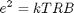
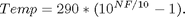
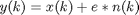

ThermalNoiseClass
Thermal noise is an inherent nonideality in every RF component. The root mean voltage generated by a signal with B bandwidth, on a R Ohm resistor at temperature T equals:

where k is thte Bolzmann constant (1.38*10e-23 Joule/Kelvin).
Properties
Methods
k
The Boltzmann constant k=1.38*10e-23.
Temp
Equivalent RF component temperaturein Kelvin. Default value is 270 K.
R
Resistor impedance. Default value 50 Ohm.
B
The bandwidth of the useful signal in the modelled RF component.
NF
Noise figure (in dB). A convenient way to model the amount of noise introduced by an RF component is NF. If NF is specified instead of noise temperature, then the value of property Temp is computed from NF with the next relation:

update
This method updates the value of Temp when NF is set.
process
The implementation of thermal noise effect in the input signal.

where x, y, n are input, output respectivelly unit variance normally distibuted random signal and e is the root of the noise voltage variation.